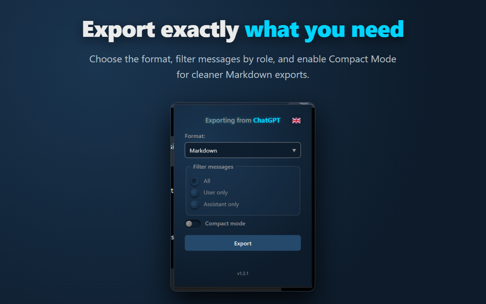
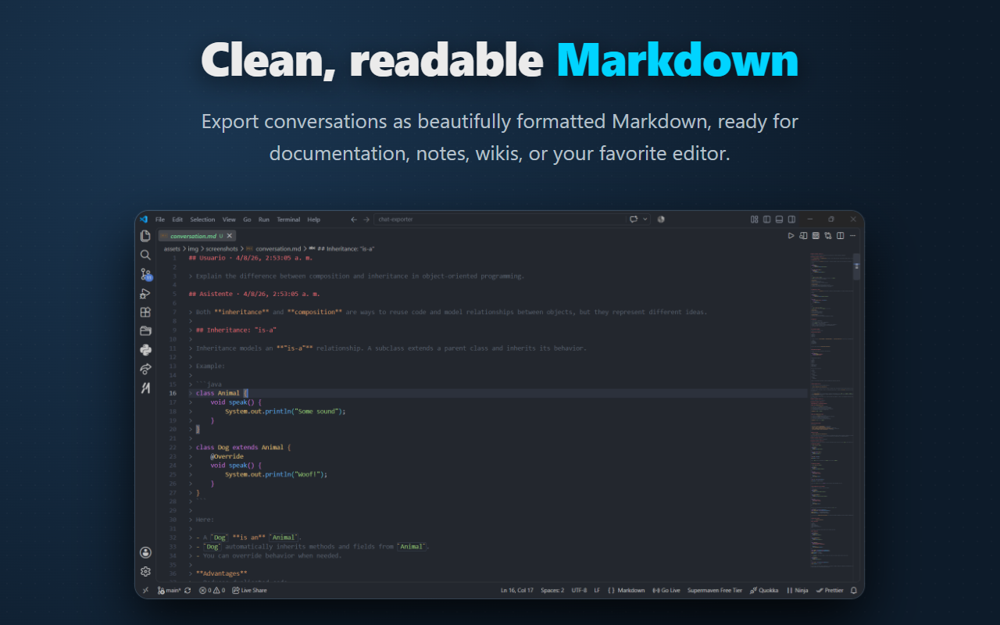

Own your conversations.
Not just your prompts.
Export ChatGPT conversations as clean Markdown or raw JSON.
Built by developers, for developers.
Interface





Features
Markdown Ready
Clean documents perfectly formatted for Obsidian, Notion, or GitHub.
Raw JSON
Keep the original structure intact for parsing or archiving.
Role Filters
Export only the User prompts, the Assistant replies, or the whole thread.
Compact Mode
Cleaner Markdown output with reduced vertical spacing.
Privacy First
100% Local
Everything runs entirely in your browser. Nothing leaves your machine.
No Tracking
Zero analytics. Zero accounts. Zero cloud dependencies.
Roadmap
- Markdown Export
- JSON Export
- CLI Integration
- Chrome Extension
- DeepSeek Integration
- Claude Integration
- Gemini Integration
FAQ
Does it upload my chats?
No. The extension parses the DOM locally.
Is it Open Source?
Yes, under the MIT License.